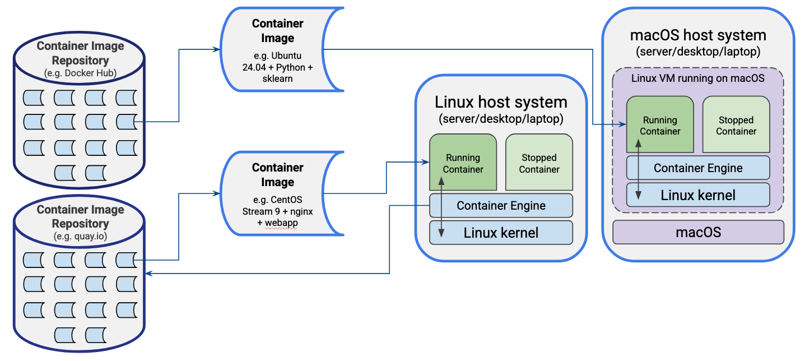

All in One View
Content from Introduction to Containers
Last updated on 2026-07-21 | Edit this page
Overview
Questions
- What are containers and how do they differ from virtual machines?
- Why are containers useful for research software and reproducibility?
- How do containers work under the hood?
- How are containers deployed on Linux versus macOS or Windows?
- What container engines and platforms are commonly used?
Objectives
- Explain what containers are and how they differ from virtual machines.
- Describe the key benefits of using containers for research software development and reproducibility.
- Identify the Linux technologies that underpin container isolation.
- Explain the role of container images, layers, and writable container filesystems.
- Describe how containers are deployed differently on Linux versus macOS and Windows.
- Name common container engines and orchestration platforms and their typical use cases.
- Explain what Podman is and why it is used in this lesson.
Containers have become a standard approach for developing, testing, deploying, and distributing modern software. A container approach packages an application together with its libraries, dependencies, and runtime environment into a single, portable virtual machine-like package (or container image) that runs consistently across different systems. Unlike virtual machines however, containers share the host operating system, making them lightweight, fast to start, and efficient to run. They simplify software deployment by ensuring that applications behave the same on a developer’s laptop, a testing environment, and in production, which reduces the common problem of “well, it works on my machine”.
Why use Containers?
Reasons for using containers includes:
- Application Portability: containers package an application with everything it needs to run, allowing it to be moved easily between laptops, servers, cloud platforms, and high-performance computing systems. This helps ensure consistent behaviour regardless of the underlying infrastructure.
- Reproducibility: containers capture the complete software environment, including specific versions of operating system libraries, dependencies, and tools. This makes it much easier to reproduce computational results and rerun analyses months or years later.
- Ease of deployment: by bundling dependencies within the container, applications avoid many common installation problems caused by missing libraries or incompatible software versions. This simplifies installation and reduces the time spent configuring systems.
- Security: since containers isolate applications and resources such as processes, and memory from one another and from the host system, this reduces the impact of faults or compromised services. They are widely used to host web applications, databases, and other services in isolated environments.
- Large library of existing containerised software: thousands of ready-to-use container images are freely available from public registries such as Docker Hub and the GitHub Container Registry. This allows developers and researchers to deploy complex software quickly without building environments from scratch.
- Container orchestration: platforms such as Kubernetes automate the deployment, scaling, networking, and management of containers across multiple machines, which is useful for building scalable applications that can adapt to changing workloads.
How do Containers Work?
Linux as an Enabling Technology
Linux is fundamental to how most containers work because containers are a Linux operating system feature rather than a form of virtual machine. Unlike virtual machines, which emulate hardware and run a complete guest operating system, Linux containers share the host’s Linux kernel. This sharing is what makes containers fast to start and efficient in their use of memory and CPU.
Two key Linux technologies enable this capability:
- Namespaces isolate resources such as processes, users, filesystems, networking, and hostnames, so each container appears to have its own independent system.
- Control groups (cgroups) limit and monitor the resources a container can use, such as CPU time, memory, disk I/O, and network bandwidth.
Together, namespaces and cgroups provide the isolation and resource management that containers require, while the shared kernel eliminates the overhead of running multiple operating systems. This of course means you need a bridging technology to run containers on operating systems other than Linux, which we’ll cover shortly!
Images
Containers are created from container images, which provide a complete template for an application’s execution environment. An image typically contains a minimal base operating system together with any required libraries, dependencies, as well as the application software you actually wish to run. Public image repositories now host a vast range of pre-built images, making it easy to deploy many common applications with minimal effort. As with any software download, it is important to use trusted sources, such as official operating system images or images published by the application’s developers.
When deploying your own software, a common approach is to start from a trusted base operating system image, install and configure your application, and then save the result as a new reusable image which you can run anywhere. Depending on the container technology, an image may be stored either as a single bundled file containing the entire environment or as a collection of layered files linked together by a manifest, with different image formats supporting different storage approaches.
Container File Systems
Containers use a combination of read-only image layers and a writable container layer managed by the container runtime.
When a container starts, its image provides a stack of read-only filesystem layers containing the operating system, libraries, and application software. The runtime adds a thin writable layer on top, and any files created or modified by the container are stored in this writable layer, while unchanged files continue to be read from the underlying image layers. This layered approach allows many containers to share the same image on disk, reducing storage requirements.
By default, the writable layer is transient: if the container is deleted, any data stored only in that layer is lost. For persistent data containers typically use separate volumes or alternatively, bind mounts, which map directories from the host filesystem into the container. This allows data such as databases, configuration files, and user-generated content to persist beyond container restarts.
Internally, the container runtime uses the Linux filesystem to present the combined image layers and writable layer as a single, unified filesystem. To applications running inside the container, this appears as a normal Linux filesystem, even though the data may be spread across multiple locations on the host.
Managing Containers
Containers are managed by a container runtime or engine, which is responsible for creating containers from images as well as starting, stopping, and removing containers. The runtime also provides each container with access to resources such as the filesystem, networking, storage, and CPU and memory, while maintaining isolation from other containers and the host system. Most users interact with the runtime through a command-line tool or graphical interface to download images, configure containers and manage their lifecycle.
Typical Deployments
Let’s look at how containers are typically deployed on two common operating systems.

In this depiction we have the two operating systems Linux and MacOS, each either installed on a server, laptop or desktop machine, with each running an installed container “engine” which is essentially the software required to manage and run containers. However in each case they run differently:
- For the Linux machine, since the containerisation technologies of namespaces and cgroups are native to the operating system, the container engine is able to run natively on the machine, interacting directly with the host’s Linux kernel.
- For the MacOS (or Windows) machine, the host system needs to run a Linux virtual machine within which the containers run, since these technologies are not natively supported in the host system. However, despite some additional required set up, the process of interacting with and managing the containers appears largely the same as we’ll see later.
Beyond this difference, in each case they have one actively “running” container, and one which has been placed into a “stopped” state, with the running container directly interfacing with the Linux kernel through system calls (restricted through namespaces, cgroups, and controlled filesystem access), avoiding any inefficient virtual machine-level translation required by VMs.
In the case of the MacOS system, we can see the running container image is baed on Ubuntu, with Python and scikit-learn (a machine learning library) installed on it, with the image having been downloaded and installed from the Docker Hub container image repository. The Linux system however has a CentOS operating system and a web application running under the NGINX web server, with that image coming from a different container image repository - quay.io in this case.
Deployment Process
In general, a typical process of obtaining an image and running it is as follows:
- A suitable image is selected from a browsable and trusted container repository (either a public one or a privately hosted container registry).
- Using a command line or desktop container management tool the image is pulled from the container registry onto the local machine.
- The container runtime retrieves the image manifest and downloads the filesystem layers it doesn’t already have, storing them in a local cache of layers.
- The new container is created based on the image and adds a writeable filesystem layer above the image’s read-only layers.
- Any command-line options or configuration files such as container name, environment variables, storage volumes, and port mappings are applied to the container.
- The container is then started, from a preconfigured entry point or command as a Linux process.
- The container is managed through the container runtime, in terms of inspecting, stopping, restarting, or removing it, or otherwise interacting with it.
Common Container Engines/Platforms
Some common container engines/platforms include:
- Docker - probably the best known and most widely used container platform at present.
- Podman - a free and open source container engine/platform - we’ll look at this today.
- Apptainer (Singularity) - an open source, daemonless container engine - widely used in research HPC environments.
- containerd - an open source container runtime that underpins other container platforms and tools.
Many more advanced uses of containers rely on orchestration platforms, for example:
- Kubernetes (K8s)- widely-used container orchestration engine
- K3s - lightweight Kubernetes implementation
- Rancher - a high-level kubernetes management platform
- SwarmKit - Container orchestration layer used in Docker
Podman
For today’s session we will use Podman, a free and open source container engine for building, running and managing containers. While Podman can be used entirely from the command line, Podman Desktop provides a graphical interface for managing Podman containers as well as containers created by other compatible container engines. One of Podman’s distinguishing features is its daemonless design: unlike some container engines such as Docker that rely on a continuously running daemon with root privileges, Podman launches containers directly as needed, improving security and reducing background system overhead. Podman is also the default or recommended container engine on several enterprise Linux distributions, including Red Hat Enterprise Linux, Fedora, and CentOS Stream, making it relevant for many production and HPC environments.
On Linux, Podman runs natively using the host operating system. On macOS and Windows, as we described earlier, it operates through a lightweight virtual machine known as a Podman machine, which provides a Linux environment while allowing users to interact with containers through familiar native command-line tools and the Podman Desktop interface.
In this session we will use Podman’s command-line interface to introduce the core concepts and functionality of container management rather than the graphical Podman Desktop application. You will learn how to search for and retrieve images from common container registries, as well as how to create, run, inspect, and manage containers based on those images.
Although the examples use Podman, the commands are almost identical
when using Docker—typically requiring only the replacement of
podman with docker at the start of each
command. This makes the skills covered readily transferable between the
two container platforms.
- Containers package an application with its dependencies into a portable, self-contained unit that runs consistently across different systems.
- Unlike virtual machines, containers share the host’s Linux kernel, making them lightweight and fast to start.
- Linux namespaces and cgroups provide the isolation and resource control that containers rely on.
- Container images are built from read-only layers; a thin writable layer is added at runtime and is lost when the container is removed (although there are options for filesystem persistence).
- On MacOS and Windows, containers run inside a lightweight Linux virtual machine managed by the container engine.
- Podman is a daemonless, open source container engine whose commands are largely interchangeable with Docker.
Content from Getting Started
Last updated on 2026-07-21 | Edit this page
Overview
Questions
- How do I verify that Podman is installed and ready to use?
- What extra step is needed before using Podman on MacOS or Windows?
- Why does Podman run inside a virtual machine on MacOS and Windows?
Objectives
- Run a command to verify a Podman installation from the command line.
- Explain why MacOS and Windows require a Podman machine before containers can be run.
- Initialise and start a Podman machine on MacOS or Windows.
- Distinguish between how Podman operates on Linux versus MacOS and Windows.
Verify Your Podman Installation
In order for us to get started using Podman, we first need to open a command-line shell.
On macOS and most Linux distributions, open the Terminal application. On Windows, the command-line shell you use depends on how you installed Podman. This may be a Windows Subsystem for Linux (WSL) terminal, Command Prompt, or Git Bash.
Once your command-line shell is open, verify that Podman is installed by running:
If Podman has been installed correctly, it will display its version number. This confirms that the Podman executable is available from your command line for the tasks that follow.
Starting the Podman Machine
If you are using Podman on a native Windows or macOS system, there is one additional step before you can begin using containers. Unlike Linux, where Podman runs directly on the host operating system, Windows and macOS do not provide the Linux kernel that containers require. Instead, Podman runs inside a lightweight Linux virtual machine that provides the environment needed to execute containers.
As mentioned during the installation process, this virtual machine must be initialised and started before Podman can be used. If you are running Linux, or using Windows Subsystem for Linux (WSL), you can skip this section because Podman runs natively and is ready to use.
To initialise and start the virtual machine, run the following commands:
The first command creates and configures the virtual machine, while the second starts it. During startup, you may see a message explaining that the Podman machine is running in rootless mode. This is the expected configuration and simply means that Podman is operating without requiring administrator privileges, which it’s designed to do.
Although you interact with Podman using the same command-line interface on every platform, what happens behind the scenes differs slightly. On Linux, the commands communicate directly with the local Podman installation. On native Windows and macOS, the commands are forwarded to the Linux virtual machine, which performs all container operations and transparently provides the same functionality to your host operating system.
If you would like a more detailed explanation of how this
architecture works, refer to the installation guide linked in the course
notes. Again, you do not need to run podman machine init or
podman machine start if you are using Linux or Windows
Subsystem for Linux.
-
podman --versionconfirms that Podman is installed and accessible from the command line. - On MacOS and Windows, Podman requires a lightweight Linux virtual
machine, initialised with
podman machine initand started withpodman machine start. - On Linux and Windows Subsystem for Linux (WSL), Podman runs natively and no virtual machine is needed.
- Podman operates in rootless mode by default, meaning it does not require administrator privileges.
Content from A Basic Container Example
Last updated on 2026-11-02 | Edit this page
Overview
Questions
- How do I run my first container with Podman?
- What is a container registry and how is one specified in a Podman command?
- What steps does
podman runactually perform? - How can I find help for Podman commands?
Objectives
- Recall the general structure of Podman CLI commands.
- Explain what a container registry is and how it is referenced in an image name.
- Run a container image using
podman runand interpret its output. - Distinguish between
podman runandpodman image pulland explain when each is appropriate. - Use the
--helpflag to locate documentation for any Podman command.
Inspecting Images and Containers
Now that Podman is installed and running, we can inspect its current state. Podman keeps a local collection of downloaded container images, as well as a record of containers that are currently running or have previously been created.
To view the images stored on your system, run:
If this is your first time using Podman, the list will probably be empty because no images have yet been downloaded. If you have experimented with Podman previously, you may already see one or more images listed.
Similarly, you can inspect your containers with:
Again, a fresh installation will typically report no containers. Existing containers are perfectly fine if you have already explored Podman.
These commands also illustrate a common structure used throughout the
Podman command-line interface. Most commands begin with
podman, followed by the type of resource being managed,
such as image or container, and then an action
to perform, such as list. Many commands also accept
optional flags and arguments that modify their behaviour or provide
additional information. Although not every Podman command follows this
exact pattern, it is common enough that learning it makes the
command-line interface much easier to understand.
Running Your First Container
Now that we have confirmed Podman is working, let’s run our first
container. The simplest way to do this is with the
podman run command. In its most basic form, the only
information we need to provide is the image we want to execute.
Enter the following command, but do not press Enter
immediately:
The argument supplied to podman run identifies the image
we want to use. The first part, quay.io, is the address of
a container registry. A registry is an online
repository that stores container images, allowing users to download and
share them. The second part, podman/hello, identifies the
specific image within that registry.
Container registries can also be explored using a web browser. For
example, visiting https://quay.io allows you to search for available
images. Searching for hello will locate the
podman/hello image, where you can view information about
the image, its documentation, and available versions. Browsing
registries in this way is often useful when looking for software
packaged as containers.
Now press Enter to execute the command.
If everything is configured correctly, Podman will download the image, create a container from it, and immediately run it. After a short download, you should see a “Hello Podman World” message together with some ASCII artwork:
OUTPUT
Trying to pull quay.io/podman/hello:latest...
Getting image source signatures
Copying blob sha256:1ff9adeff4443b503b304e7aa4c37bb90762947125f4a522b370162a7492ff47
Copying config sha256:83fc7ce1224f5ed3885f6aaec0bb001c0bbb2a308e3250d7408804a720c72a32
Writing manifest to image destination
!... Hello Podman World ...!
.--"--.
/ - - \
/ (O) (O) \
~~~| -=(,Y,)=- |
.---. /` \ |~~
~/ o o \~~~~.----. ~~
| =(X)= |~ / (O (O) \
~~~~~~~ ~| =(Y_)=- |
~~~~ ~~~| U |~~
Project: https://github.com/containers/podman
Website: https://podman.io
Desktop: https://podman-desktop.io
Documents: https://docs.podman.io
YouTube: https://youtube.com/@Podman
X/Twitter: @Podman_io
Mastodon: @Podman_io@fosstodon.orgWhat podman run Actually Does
Although podman run appears to perform a single seamless
task, it is actually carrying out two separate operations in
sequence:
- Podman checks whether the required image already exists on your machine. If it does not, the image is downloaded from the specified registry and stored locally.
- Podman creates a new container from that image and starts it.
These steps can also be performed independently. For example, you could download an image in advance using:
OUTPUT
Trying to pull quay.io/podman/hello:latest...
Getting image source signatures
Copying blob sha256:1ff9adeff4443b503b304e7aa4c37bb90762947125f4a522b370162a7492ff47
Copying config sha256:83fc7ce1224f5ed3885f6aaec0bb001c0bbb2a308e3250d7408804a720c72a32
Writing manifest to image destination
83fc7ce1224f5ed3885f6aaec0bb001c0bbb2a308e3250d7408804a720c72a32And later run it using the run command as before:
For convenience, however, podman run combines both
operations whenever the image is not already available locally.
Using the Built-in Help
As you begin working with Podman, it is worth remembering that comprehensive documentation is available directly from the command line.
Running:
This displays an overview of the available commands, while appending
--help to any specific command provides detailed
information about its syntax, options, and arguments. For example:
Will shows the complete documentation for removing containers.
Essentially, when building a command you can add --help at
any stage to obtain assistance at that point. Many commands support a
large number of options, so the output can appear extensive. However, it
serves as a very helpful reference when you need to check the available
functionality or remind yourself of a command’s syntax.
- Most Podman commands follow the pattern
podman <resource> <action>, such aspodman image listorpodman container list. - A container image name includes the registry address, repository,
and image name, for example
quay.io/podman/hello. -
podman runautomatically pulls an image if it is not already stored locally, then creates and starts a new container from it. -
podman image pulldownloads an image without running it, which can be useful to prepare images in advance. - Appending
--helpto any Podman command displays documentation and options for it.
Content from Managing Containers
Last updated on 2026-11-02 | Edit this page
Overview
Questions
- How do I view all containers on my system, including those that have stopped?
- How do I run a container in the background and still access its output?
- How can I execute commands or open a shell inside a running container?
- How do I share files between my host machine and a container?
- How do I remove containers and images when they are no longer needed?
Objectives
- Use podman commands for listing, starting, stopping, and removing containers and images.
- Explain the difference between
podman runandpodman container start. - Interpret container exit codes and explain what they indicate.
- Run a long-lived service container in detached mode with a published port.
- Use
podman execto run commands and open an interactive shell inside a running container. - Mount a host directory into a container using the
-voption to share files. - Determine the correct order of operations for removing containers and their associated images.
Inspecting Images and Containers
Now that we’ve downloaded and run our first container, we can inspect the images and containers stored on our system.
To see the images currently available, run:
OUTPUT
REPOSITORY TAG IMAGE ID CREATED SIZE
quay.io/podman/hello latest 83fc7ce1224f 2 years ago 580 kBThis shows the hello image that Podman downloaded when
we ran the container. Notice the CREATED column. This
refers to when the image was created and published by its developer, and
not when it was downloaded onto your computer.
If we now list our running containers:
OUTPUT
CONTAINER ID IMAGE COMMAND CREATED STATUS PORTS NAMESIt may seem odd that the output is empty. Although we just ran a
container, this command only displays currently running containers. Our
hello container simply started, printed its message, and
then exited immediately. This highlights an important characteristic of
containers: they do not need to be long-running services. Many
containers are designed as one-shot programs that perform a task and
then terminate.
To view all containers, including those that have already
stopped, use the --all option:
Or equivalently:
OUTPUT
CONTAINER ID IMAGE COMMAND CREATED STATUS PORTS NAMES
2a2af201f219 quay.io/podman/hello:latest /usr/local/bin/po... 4 minutes ago Exited (0) 4 minutes ago confident_solomonThis time you’ll see the container that was created a few moments
ago. Notice that its status is shown as Exited (0). The
value in parentheses is the container’s exit code:
- An exit code of
0indicates that the container completed successfully.. - An exit code of
1or otherwise would indicate the container exited prematurely due to an error.
The name confident_solomon name is randomly assigned as
a human-readable identifier for the container.
Naming Containers
Another useful column is NAMES. By default, Podman
assigns each new container a randomly generated name consisting of two
words. This gives us a convenient way to refer to the container later,
but remembering randomly assigned names can quickly become
inconvenient.
A more predictable approach is to assign your own name when creating
the container by using the --name option:
This time you’ll notice that Podman does not download the image again, because it is already stored locally. You can confirm this by running:
There is still only a single hello image. However, if
you list all containers again:
OUTPUT
CONTAINER ID IMAGE COMMAND CREATED STATUS PORTS NAMES
2a2af201f219 quay.io/podman/hello:latest /usr/local/bin/po... 6 minutes ago Exited (0) 6 minutes ago confident_solomon
15731f65ecfe quay.io/podman/hello:latest /usr/local/bin/po... 7 seconds ago Exited (0) 7 seconds ago hello_worldYou’ll now see two containers. Although both were created from the
same image, each execution of podman run creates a new
container. The second container uses the name we explicitly assigned,
i.e. hello_world.
Restarting an Existing Container
Rather than creating a new container every time, we can start an
existing one again using podman container start:
OUTPUT
hello_worldThe container does run, but only the container name appears on the
terminal. This is because podman container start starts the
container without attaching its standard input and output to the current
terminal.
When we originally used podman run, the terminal was
attached automatically, allowing us to see the program’s output. To
achieve the same behaviour when restarting an existing container, add
the --attach option:
This reruns the existing container and displays its output in the terminal.
Using podman run again would create another new
container, whereas podman container start allows us to
rerun one that already exists.
Command Shortcuts
Typing podman container before every command quickly
becomes repetitive, so Podman provides convenient shortcuts for many
common operations.
For example, instead of:
you can simply write:
Likewise, to stop a long-running container (which we’ll encounter later), you can use:
instead of:
Similar shortcuts are available for several other frequently used Podman commands.
Removing Containers and Images
As we continue working with containers, we’ll gradually accumulate images and containers on our system. Some of these may no longer be useful, so it’s important to know how to remove them and reclaim disk space.
Let’s start by looking at the images we currently have:
Suppose we decide to remove the hello image. We can do
that using the image rm command, where rm is
short for remove:
However, this doesn’t succeed. Podman reports an error because the image is still being used by one or more containers. Before an image can be deleted, every container based on that image must first be removed.
To see the containers currently on our system, including those that have already stopped, run:
Our first container was given a randomly generated name by Podman. Remove it using the name shown on your own system. For example:
Your container will almost certainly have a different name. If the command succeeds, Podman prints the container’s unique identifier, confirming that it has been removed.
We can then remove the second container, which we explicitly named
hello_world:
Verify that both containers have been removed:
With no remaining containers using the image, we can now remove the image itself:
Podman confirms that the image has been deleted. We can verify this by listing the remaining images:
At this point we’ve removed all of the containers and images created during the earlier exercises.
Running a Web Server Container
So far we’ve only run a simple “Hello World” container. Let’s now run something a little more useful by starting a web server inside a container.
Type in the following command, but do not yet press
Enter:
Several things are happening here:
-
--name webservergives the container a meaningful name, which we’ve seen before. -
docker.io/library/httpdspecifies the image to download and run. In this case the image comes from the Docker Hub (docker.io) registry, demonstrating that Podman can use Docker images directly. - The image contains an Apache HTTP Server,
httpd. - The
-poption publishes a network port, allowing software running inside the container to be accessed from the host machine.
The port mapping is written as
host-port:container-port/protocol. In this example:
- The web server listens on port 80 inside the container
- That port is mapped to port 8080 on the host
- The connection uses the TCP protocol
Web servers typically listen on port 80, but using port 8080 on the host avoids conflicts with any web server already running on your machine and avoids the elevated privileges often required for low-numbered ports.
Now press Enter to download and start the container.
Unlike our hello example, this container continues
running. The terminal remains attached to the container, displaying the
Apache log output as requests are received.
Accessing the Web Server
Once the container is running, open a web browser and visit http://localhost:8080
You should see a page displaying the message
It works!.
If you watch the terminal running the container, you’ll also see Apache log the request. This is exactly what we’d expect from a normal web server.
You can also retrieve the page directly from another terminal. Start
another terminal, but be careful not to resize the terminal with the
running webserver within it, since this may send SIGWINCH
(signal of window change) to that terminal, and cause the container to
exit.
On macOS, Windows, or Linux with curl installed,
run:
The HTML source of the page is displayed in the terminal:
OUTPUT
<!DOCTYPE HTML PUBLIC "-//W3C//DTD HTML 4.01//EN" "http://www.w3.org/TR/html4/strict.dtd">
<html>
<head>
<title>It works! Apache httpd</title>
</head>
<body>
<p>It works!</p>
</body>
</html>If curl is not available, Linux users can use
wget instead:
The additional options tell wget to:
- Suppress most status output (
-nv) - Write the downloaded page to standard output instead of a file
(
-O -)
The result is essentially the same HTML page, together with a brief status message.
Running Containers in the Background
Having the web server occupy an entire terminal isn’t always convenient. Fortunately, containers can also run in detached mode, allowing them to continue running in the background.
First, stop the existing container from another terminal:
This uses the shortcut form of podman container stop.
The terminal running the web server should display log messages
indicating that Apache is shutting down, after which the container
exits.
We can then remove the stopped container:
Now from within the original terminal that we used to start the container, rerun the web server in detached mode:
The additional -dt options change how the container
runs:
-
-dstarts the container in the background, in a detached state -
-tallocates a pseudo-terminal so that the container’s output is retained internally for logging purposes
This time the command immediately returns to the shell while the web server continues running in the background, leaving the terminal free for other work.
Viewing Container Logs
When a container is running in detached mode, it no longer writes its output directly to the terminal. While this keeps the terminal free for other work, it also means we can no longer see what the application inside the container is doing.
Fortunately, Podman stores the container’s output and allows us to
view it at any time using the logs command:
This displays the web server’s log output, allowing us to inspect recent activity without needing to restart or reattach to the container.
Running Commands Inside a Running Container
Viewing logs is useful, but sometimes we need much greater access to a running container. For example, we may want to inspect its filesystem, check configuration files, or run diagnostic commands.
Podman provides the exec command, which executes a
command inside an already running container.
For example, to list the contents of the root directory of the container, run:
OUTPUT
bin dev home media opt root sbin sys usr
boot etc lib mnt proc run srv tmp varHere:
-
execexecutes a command inside the container -
-tallocates a terminal -
-ikeeps standard input open, allowing interactive commands
We can also see the container’s current working directory:
OUTPUT
/usr/local/apache2This shows that commands execute from the Apache web server’s working directory.
Opening an Interactive Shell
Running individual commands with podman exec is useful,
but repeatedly typing long commands soon becomes tedious.
Instead, we can start an interactive shell inside the container:
OUTPUT
root@e7af92db948c:/usr/local/apache2# This gives us a shell prompt inside the running container, allowing us to explore it much as we would a remote machine accessed via SSH.
Notice that we are logged in as the root user within the container, so we have full administrative privileges over the container’s filesystem.
For example, we can locate the web page that Apache is serving:
OUTPUT
bin build cgi-bin conf error htdocs icons include logs modulesWe can also look at the HTML document that was served to us earlier:
OUTPUT
<!DOCTYPE HTML PUBLIC "-//W3C//DTD HTML 4.01//EN" "http://www.w3.org/TR/html4/strict.dtd">
<html>
<head>
<title>It works! Apache httpd</title>
</head>
<body>
<p>It works!</p>
</body>
</html>When you’ve finished exploring, exit the shell as normal:
You’ll be returned to your host machine’s command prompt.
Sharing Files Between the Host and a Container
So far we’ve treated containers as self-contained environments. However, real-world applications almost always need to exchange data with their host system.
For example, suppose we’re running a scientific analysis inside a container because it provides the correct software environment. We’ll need a way to provide the analysis with input data and retrieve the results afterwards.
Fortunately, Podman makes this straightforward.
Just as we previously mapped a host network port to a container port, we can also mount a directory from the host machine inside the container. This allows the host and container to access the same files.
Let’s demonstrate this by serving our own web page from the host machine using the Apache web server container.
Create a Web Content Directory on the Host
First, create a directory to hold our web pages:
Next, create a simple HTML page inside that directory using your preferred text editor.
For example, using Nano:
Add a very simple page:
Feel free to replace the text with your own message.
If you’re using Nano, press Ctrl+O to save the file and
Ctrl+X to exit. On Windows, you can use Notepad or any
other text editor to create the same file.
Mounting a Host Directory
We can now start a new web server container, this time giving it
access to the webdocs directory we created on our host
machine.
The command differs slightly depending on your operating system, because we’ll use an environment variable to refer to our current working directory. Windows and Linux/macOS use different syntax for environment variables.
If you’re using Windows with the Command Prompt, use:
BASH
podman run --name webserver -v %CD%/webdocs:/usr/local/apache2/htdocs -dt -p 8080:80/tcp docker.io/library/httpdIf you’re using Linux, MacOS, or Windows with Git Bash, use:
BASH
podman run --name webserver -v $PWD/webdocs:/usr/local/apache2/htdocs -dt -p 8080:80/tcp docker.io/library/httpdDon’t press Enter immediately, let’s first examine the
new part of the command.
The command is almost identical to the one we used previously, except
for the addition of the -v option. This option creates a
volume mount, allowing a directory on the host machine to be
accessed from within the container.
The general form is:
-v <host-directory>:<container-directory>
The first path specifies the directory on the host, while the second specifies where that directory will appear inside the container.
For the host directory, we need to provide its full path. Rather than typing this manually, we use an environment variable representing the current directory:
-
$PWDon Linux, MacOS, and Git Bash -
%CD%on Windows Command Prompt
Appending /webdocs gives the full path to the directory
we created earlier.
The second path /usr/local/apache2/htdocs is where the
Apache web server stores the web pages it serves. By mounting our
webdocs directory here, the container sees our local files
instead of its own default web pages.
In effect, whenever Apache reads files from its htdocs
directory, it is actually reading the contents of the
webdocs directory on the host machine.
Now press Enter to start the container.
As before, Podman immediately returns the container’s unique identifier, indicating that the container has started successfully in detached mode.
Verifying the Mounted Files
To confirm that the container is serving our own web page, visit
http://localhost:8080 in a web browser.
Alternatively, you can retrieve the page from the command line using
curl:
This time, instead of the default Apache “It works!” page, you should
see the HTML that you created in webdocs/index.html.
This demonstrates one of the most useful features of containers: applications running inside a container can work directly with files on the host machine, making it easy to edit data locally while software inside the container uses it immediately.
-
podman container list -ashows all containers including stopped ones whilstpodman container listshows only running containers. - An exit code of
0means a container completed successfully, whereas a non-zero exit code indicates an error. -
podman runalways creates a new container, andpodman container startrestarts an existing stopped container. - The
-p host-port:container-port/protocoloption maps a port inside a container to a port on the host, enabling access to services running in the container. - The
-dflag runs a container in detached (background) mode. -
podman logs <name>retrieves the log output from a running (background) container. -
podman exec -ti <container> /bin/bashopens an interactive shell inside a running container. - The
-v <host-dir>:<container-dir>option mounts a host directory into the container, allowing both to access the same files. - All containers based on an image must be removed before that image can be deleted.
Content from (Optional) Container Registries
Last updated on 2026-07-21 | Edit this page
Overview
Questions
- How do I check which container registries Podman is configured to search?
- How do I configure Podman to search a registry on Linux?
- How do I search for container images from the command line?
Objectives
- Recall the command used to display Podman’s configuration, including configured search registries.
- Explain why registry search may need to be configured manually on Linux but not on macOS or Windows.
- Create a
registries.conffile to configure a search registry on Linux. - Use
podman searchto find container images from the command line.
Searching Container Registries
The final topic we’ll cover is searching container registries from the command line.
Earlier we browsed the quay.io registry using a web
browser. Podman also allows us to search registries directly from the
command line using the search command.
However, depending on your operating system, this feature may not be
configured by default. On Windows and MacOS, Podman is typically
configured to search the Docker Hub (docker.io)
automatically. On many Linux installations, however, you’ll first need
to specify which registries Podman should search.
Checking Your Registry Configuration
To inspect your Podman configuration, run:
This command displays a large amount of information about your Podman installation.
Look for the registries section. If registry searching has already been configured, you should see something similar to:
OUTPUT
search:
- docker.ioIf no search registries are listed, the podman search
command will not return any results until a registry has been
configured.
Configuring Registry Search (Linux)
If you’re using Linux and no search registries are configured, you’ll need to create a simple configuration file.
Podman looks for user-specific configuration inside the
.config directory within your home directory.
First, inspect the contents of that directory:
If a containers directory already exists, you can use
it. Otherwise, create it:
If a file named registries.conf already exists, you can
edit it. Otherwise, create a new one:
Add the following configuration:
Save the file using Ctrl+O and exit Nano wih
Ctrl+X.
Searching for Images
With the registry configured, you can search for container images directly from the command line.
For example:
Podman searches the configured registry and returns a list of images whose names or descriptions match the search term.
You are not limited to Docker Hub. If you regularly use other
registries, such as quay.io, you can add them to your
configuration so that Podman searches multiple registries
automatically.
-
podman infodisplays Podman’s full configuration, including which registries are configured for searching. - On macOS and Windows, Docker Hub is configured as a search registry by default; on Linux this typically requires manual configuration.
- Registry search is configured by editing
~/.config/containers/registries.conf. -
podman search <term>returns images from all configured registries whose names or descriptions match the search term.